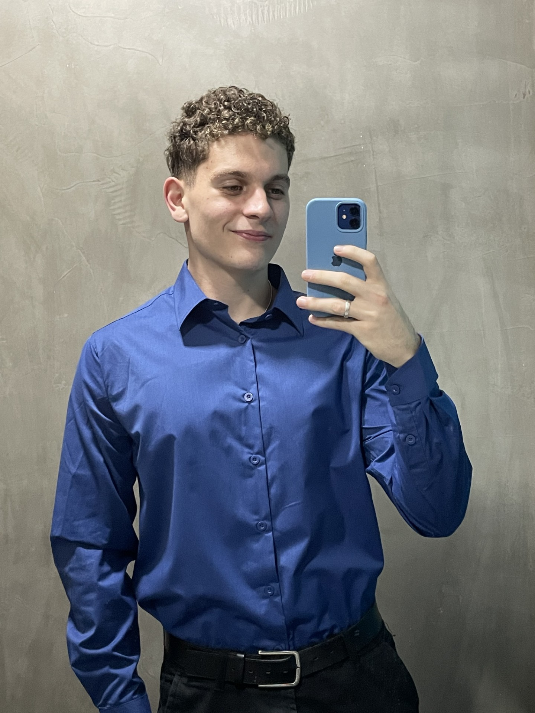

Sobre mim
Meu nome é Mateus Borges Galeani, e atualmente sou estudante de Análise e Desenvolvimento de Sistemas na faculdade SPTech, mas ao longo dos meus 20 anos já fui muitas coisas, até ano passado (2025) eu era estundante de Gestão de TI e também um execelente monitor em uma creche de cachorros (sim, existe creche para cachorros), mas também já fui um soldado do Exército Brasileiro, tive a oportunidade única de servir e (mesmo não concordando no começo) descobri que foi uma de muitas experiências que são únicas nessa vida, aprendi muitas coisas e fiz muitos amigos também, lá descobri que gosto de correr, uma coisa que achava totalmente chata (mas nunca tinha tentado). Já fui um estudante do ensino médio que não se preocupava tanto com a sua futura carreira, mas sim com a prova de literatura que eu não tinha estudado direito, ou se vai ter inter-classe no final do semestre, já fui o crush da minha atual noiva (Yasmin), que tive a sorte grande de trombar com ela na minha vida. Já fui um bom amigo para meus melhores amigos: Murillo, Erick, Pedro, Luiz e Damiati. Mas também já fui um péssimo amigo, namorado, filho, irmão, neto... Faz parte.
Mas uma coisa que sempre me dá uma baita nostagia é de quando eu fui umacriança, que adorava ver vídeo de Minecraft e sonhava em morar em uma mansãocom seus amigos, jogando e se divertindo. Isso pra mim me traz paz, em saberque eu aproveitei minha infância do meu jeito, fazendo coisas que eu gosto comas pessoas que eu amo. O Minecraft pra mim sempre vai ser mais do que um jogo, ele representa a minha infância, os finais de semana que eu estava atoa e ficava jogando o dia inteiro com minha irmã sem nenhuma outra preocupação. As horas que eu passava em ligação no telefone fixo com meu amigo jogando SkyWars (mini-game dentro do Minecraft).
Pra mim foi muito difícil explicar em poucas palavras o que é o Minecraft, mas a verdade mesmo é que ele é apenas um jogo. E ele não seria tão legal assim se não fosse jogado junto com as pessoas que eu amo, e por isso esse tema é tão importante pra mim, pois não é sobre o jogo Minecraft, é sobre a relevância que ele teve e continua tendo na minha vida.
